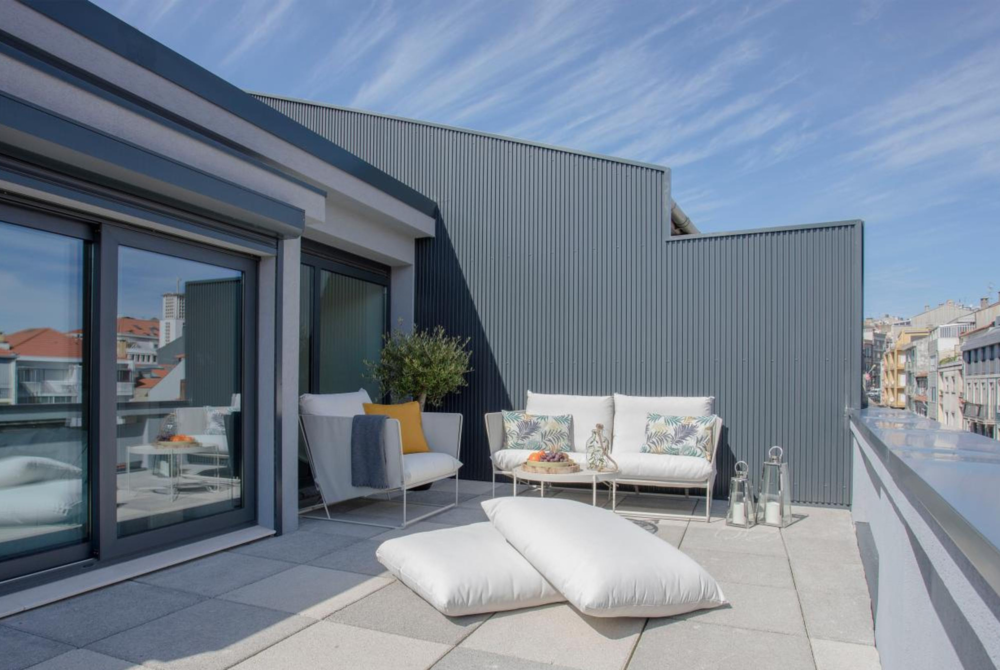
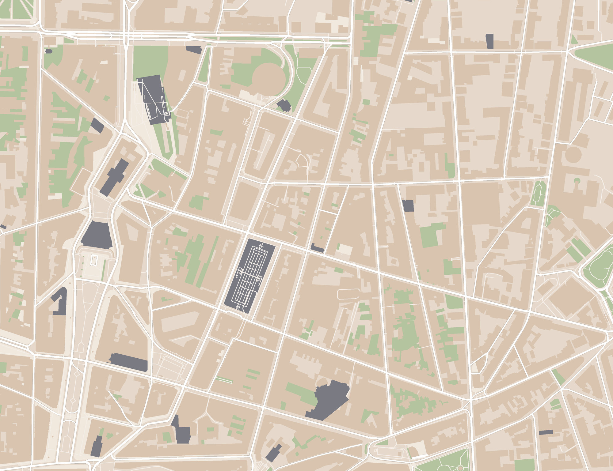
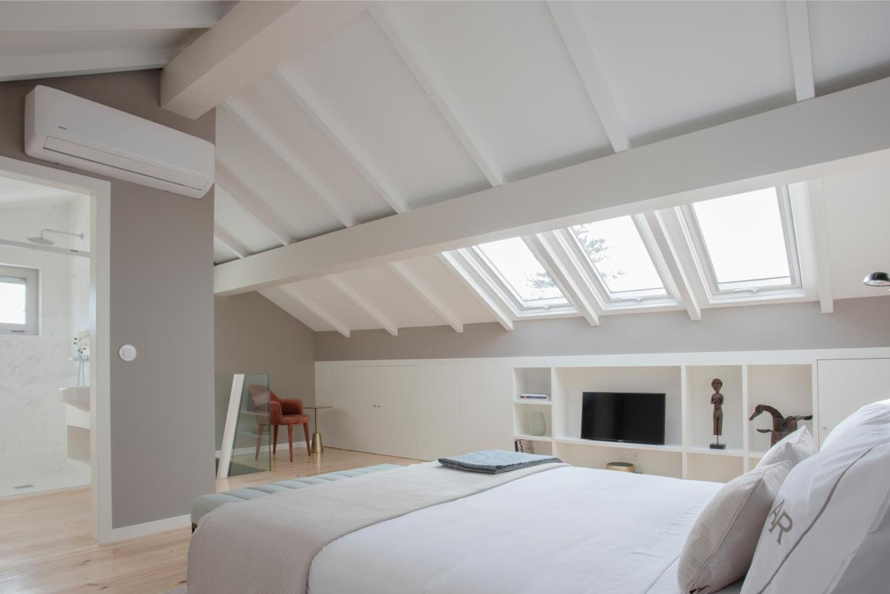

Rua da Alegria · Porto
Alegria Penthouse
Duplex T2 · 125 m² · terraço
- 125m², em dois pisos
- 2quartos
- 2casas de banho
- 1terraço
- Terraço com sofás e guarda-sol
- Varanda
- Ar condicionado em cada divisão
- Aquecimento
- Wi-Fi gratuito
- e mais 8
01
Dois pisos e um terraço.
O maior apartamento da casa: 125 m² no último andar, em duplex, com terraço e varanda.
A sala, a cozinha com ilha e a mesa de jantar partilham o mesmo espaço. Há dois quartos com cama de casal grande e duas casas de banho; um dos quartos fica no piso de cima, no sótão, por uma escada íngreme. O prédio não tem elevador: são quatro andares a pé.
the large terrace with comfy furniture was great for relaxing in the sunshine
02
Do terraçoao sótão.
0108
03
O que a casa oferece.
- Terraço com sofás e guarda-sol
- Varanda
- Ar condicionado em cada divisão
- Aquecimento
- Wi-Fi gratuito
- Kitchenette equipada, com forno e placa
- Máquina de lavar loiça
- Máquina de café
- Televisão com streaming
- Roupa de cama e toalhas
- Secador de cabelo
- Cadeira alta para crianças
- Ferro e tábua
04
No último andar da Rua da Alegria.

Rua de Santa CatarinaRua de Sá da BandeiraRua de Passos ManuelRua FormosaRua da AlegriaAvenida dos AliadosRua de Santo IldefonsoRua do BonjardimRua de Gonçalo CristóvãoRua de 31 de JaneiroRua do BolhãoRua de Fernandes TomásMTrindadeMBolhãoMAliados1Mercado do Bolhão2Capela das Almas3Rua de Santa Catarina4Igreja de Santo Ildefonso5Teatro Sá da BandeiraAAlegria PenthouseBRua de Alexandre Braga, 26 200 m- MMetro
- Edifícios conhecidos
Rua da Alegria, 215, 4.º, 4000-043 Porto
-
1
Mercado do Bolhão
O mercado de bancas de fruta sob uma cobertura de vidro fica mesmo ao lado, em frente à Rua de Alexandre Braga.
5 min a pé -
2
Capela das Almas
A fachada inteira é um painel de azulejos azuis e brancos na Rua de Santa Catarina.
3 min a pé -
3
Rua de Santa Catarina
Rua pedonal de lojas e cafés onde fica o Café Majestic, a poucos minutos a pé.
5 min a pé -
4
Igreja de Santo Ildefonso
Duas torres de granito e painéis de azulejo na fachada, na Praça da Batalha.
9 min a pé -
5
Teatro Sá da Bandeira
Um teatro de fachada cor-de-rosa na Rua de Sá da Bandeira.
10 min a pé
B O outro prédio, Rua de Alexandre Braga, 26: 4 min a pé
Tempos a pé desde a porta, pelo percurso nas ruas (OpenStreetMap).
Como chegar
05
Antes de chegar.
- Check-in
- 16:00 – 00:30
- Check-out
- Até às 11:00
- Fumar
- Não
- Festas
- Não
- Animais
- Não
- Elevador
- Não tem: escadas até ao apartamento
- Estacionamento
- Não tem; há parques pagos perto
Reservar Alegria Penthouse
Também emBooking.com

Alegria Penthouse 22 fotografias